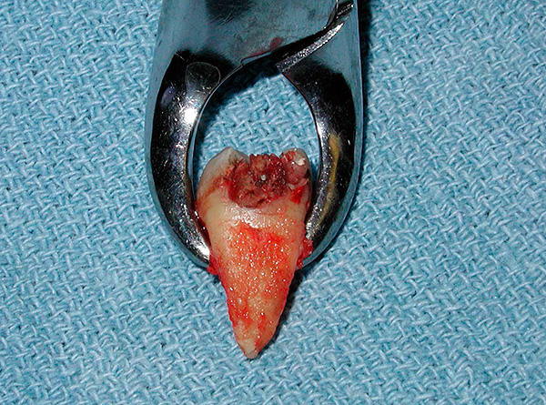
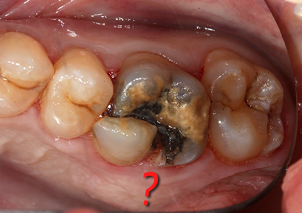
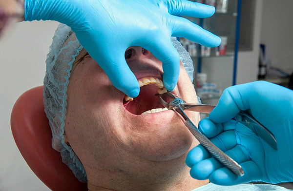
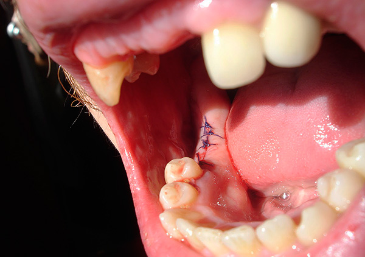
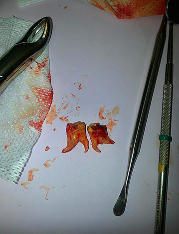

Удаление зубов в ООО СФ «Скорпион» так же как и другие процедуры проходит безболезненно.
Удаление зуба считается стоматологической операцией и предполагает хирургическое вмешательство. Поэтому отнестись к этой процедуре следует со всей ответственностью.
Предпосылок для удаления (экстракции) коренных зубов не так много, так как с зубами, которые появляются после выпавших молочных, человек проживает всю свою жизнь.
Основные показания к (удалению) экстракции:
- сильное разрушение зуба;
- запущенный пульпит;
- перелом коронки;
- образование кисты на верхушке корня;
- полная или частичная ретенция, то есть невозможность прорезывания;
- неправильное расположение зуба;
- установка брекет-системы, протезов, мостов;
- опухоль;
- подвижность зуба третей степени и его выдвижение в связи с резорбцией костной ткани при пародонтите или периодонтите;
- выдвинувшиеся зубы при потере антагониста, а также те, которые мешают созданию функционального протеза;
- Некоторые виды переломов корня в результате механической травмы.
Противопоказания:
- воспаление десен;
- обострение хронических заболеваний;
- высокая температура;
- расстройство нервной системы;
- беременность (особенно в I триместре и в последнем месяце).

Почему зубы иногда приходится удалять?
Прежде чем провести удаление зуба, врач-стоматолог заблаговременно определяет показания к этому, то есть взвешивает все «за» и «против». Бывают такие клинические ситуации, когда зуб может считаться спорным – это значит, что врач-стоматолог даже с учетом имеющихся показаний не может однозначно сказать, стоит ли рисковать, сохраняя его, или все-таки удалить его.
Нередки и ситуации, когда в одной клинике предлагают немедленно выдернуть больной зуб, а в другой – берутся его спасти./h3>
Иными словами, при удалении зубов очень важен индивидуальный подход, здравый смысл и медицинская логика в сочетании с опытом и профессионализмом врача.
Случаи, когда человек желает выдернуть ни в чем не повинный зуб, встречаются довольно часто и во взрослой стоматологии, особенно среди мужчин и женщин старше 45-50 лет. Во многом это бывает связано со старыми воспоминаниями о пережитках советской стоматологии, когда зуб при любом удобном случае (даже при кариесе) отправлялся под щипцы. До сих пор такие категории граждан часто попадают на прием с просьбами или даже требованиями удалить зуб при кариесе или пульпите.
Так вот, современная стоматология давно перечеркнула эти предрассудки. Теперь не только при кариесе (даже глубоком) и пульпите, но и при большинстве периодонтитов зубы лечатся замечательно, и их вовсе не нужно спешить удалять. И даже если зуб, казалось бы, сломался под корень – еще не факт, что корень потребуется удалять, так как вполне бывает можно восстановить функциональность и эстетику зуба с помощью корневой вкладки и коронки.

Этапы удаления зуба:
Если существует возможность удалить зуб при помощи щипцов, то удаление называют простым, и проводится оно в несколько этапов:
- Вначале производится анестезия;
- Затем осуществляется отслоение от зуба десны при помощи гладилки;
- Затем врач накладывает щипцы на зуб;
- Щипцы продвигаются под десну;
- После этого осуществляется «расшатывание» зуба – это необходимо, чтобы разрушить связочный аппарат, удерживающий зуб в лунке;
- В итоге происходит «вывихивание» зуба;
- Затем осуществляется извлечение зуба из лунки;
- Завершающий этап – так называемый гемостаз, то есть остановка кровотечения с помощью марлевого тампона или специальных кровоостанавливающих препаратов.

В отдельных случаях может потребоваться наложение швов.
Для сложных удалений применяют бормашину (для распиливания зуба на части, выпиливания кости), винтов, лигатур и некоторых других специфических инструментов.
ВАЖНО! Стоматолог-хирург не всегда может заранее точно определить, будет ли удаление зуба сложным или простым.
Для того чтобы максимально уменьшить травмирование тканей во время удаления зуба, а значит – ускорить и сделать более благоприятным процесс последующего заживления, в ООО СФ «Скорпион» используют так называемый атравматичный метод удаления зубов.

Данная процедура сопровождается применением как бормашины так и ультразвука. Пьезохирургический аппарат позволяет с помощью ультразвукового скальпеля бескровно отделить периодонтальные связки, удерживающие зуб и извлечь его из лунки.
Несколько практических советов, которые помогают вам благополучно перенести процедуру удаления зуба:/h2>
- Перед удалением зуба стоит хорошо поесть. Сытый человек лучше справляется со стрессом, значительно реже падает в обморок и кровь сворачивается лучше, что важно после процедуры;
- Не следует принимать алкоголь для храбрости. Риск появления отека и длительного кровотечения у нетрезвых людей повышен, не говоря уже о неадекватном поведении;
- Полезно иметь позитивный настрой. Если изначально быть настроенным на благополучный исход процедуры, то почти всегда удаление проходит замечательно, а сроки заживления максимально короткие. Чем больше человек говорит себе, что ничего не получится и чем сильнее себя накручивает, тем больше беспокойства себе и врачу он доставляет, подчас просто из-за тревоги совершая неправильные действия (использование ненужных мазей, полосканий, опасных народных средств и т.д.);
- Выполнять все назначения и рекомендации врача после процедуры удаления зуба в период заживления лунки зуба.
|